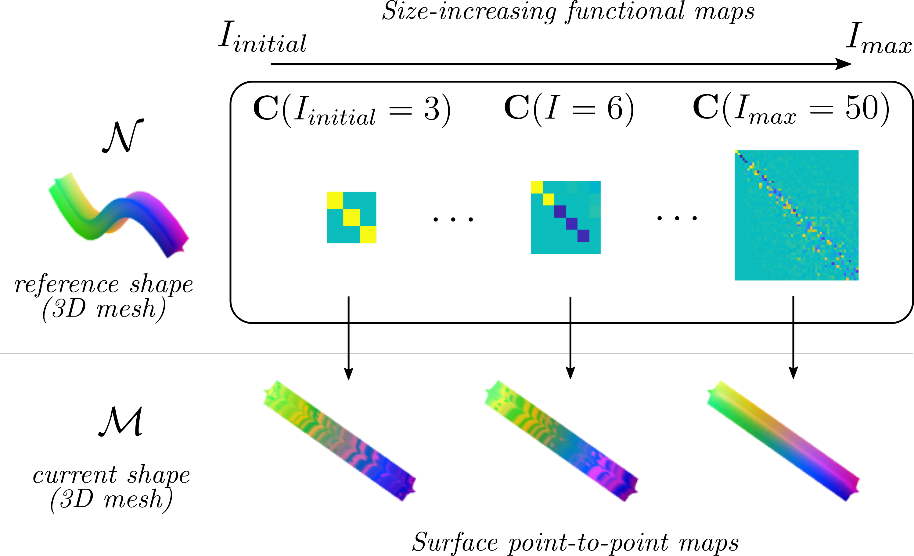

2 Functional maps
2.1 Functional maps: background
Functional maps are widely used to compute point-to-point correspondences between pairs of 2D surfaces (embedded in 3D). In the computer graphics context, they were introduced in (Ovsjanikov et al., 2012) for computing point-to-point correspondences between two surfaces (manifolds) \(\mathcal{M}\) and \(\mathcal{N}\). These surfaces are defined in the discrete setting as triangular meshes, being \(M\) the number of nodes in \(\mathcal{M}\) and \(N\) the number of nodes in \(\mathcal{N}\). Consider now the space of all real-valued functions on surfaces \(\mathcal{M}\) and \(\mathcal{N}\), i.e. \(\mathcal{F}(\mathcal{M},\mathbb{R})\) and \(\mathcal{F}(\mathcal{N},\mathbb{R})\) respectively, and suppose we can obtain a functional \(T_F\) that maps one space onto the other: \[ T_F:\mathcal{F}(\mathcal{M},\mathbb{R})\rightarrow\mathcal{F}(\mathcal{N},\mathbb{R}). \tag{1} \] This means that any real-valued function \(f:\mathcal{M}\rightarrow\mathbb{R}\) can be mapped to an analogous function \(g:\mathcal{N}\rightarrow\mathbb{R}\) by applying functional \(T_F\) as follows: \[ g=T_F(f). \tag{2} \] Recall, the objective is to obtain a point-to-point matching between \(\mathcal{M}\) and \(\mathcal{N}\). Therefore, as input for (2), we are interested in a specific kind of function \(f\) that allows us to select specific points of surface \(\mathcal{M}\) and find their corresponding image in \(\mathcal{N}\). We denote a function that selects a point \(x_s\in\mathcal{M}\) as: \(f_s(x)=1\) if \(x=x_s\) and \(f_s(x)=0\) otherwise. After applying (2), we can obtain the corresponding selector function for \(\mathcal{N}\), i.e. \(g_s\), which provides us with the matched point \(x_s\in\mathcal{N}\): one just needs to find \(x\in\mathcal{N} \mid g_s(x)= 1\) and \(g_s(x)=0\) for the rest of points. The main problem now is how to obtain \(T_F\) in (1).
We can consider a function \(f\) as a linear combination of infinite basis functions \(\{\phi^\mathcal{M}_i\}\), i.e. \(f=\sum^\infty_i a_i \phi^\mathcal{M}_i\). Also consider \({\{\phi^\mathcal{N}_j\}}\) as the analogous set of infinite basis functions of \(g\). This decomposition leads to the following definition of \(T_F\) (proposed in (Ovsjanikov et al., 2012), remark 4.2): \[ T_F(f)=T_F(\sum^\infty_{i}a_i\phi^\mathcal{M}_i)=\sum^\infty_{j}\sum^\infty_{i}a_i c_{i,j}\phi^\mathcal{N}_j. \tag{3} \] The functional representation \(T_F\) (or functional map, for now on) can be represented in matrix form as
\[ T_F(\textbf{A})=\textbf{C}_{\infty}\textbf{A}, \tag{4} \] being \(\textbf{C}_{\infty}\) (with elements \(c_{i,j}\in \mathbb{R}\)) an infinite matrix and \(\textbf{A}\in \mathbb{R}^{\infty}\) the infinite vector of coefficients \(a_i\in \mathbb{R}\). The goal is to obtain a finite approximation of \(\textbf{C}_{\infty}\), i.e. \(\textbf{C}\), that allows us to compute a point-to-point map \(T:\mathcal{M}\rightarrow\mathcal{N}\) between our two shapes' surfaces \(\mathcal{M}\) and \(\mathcal{N}\).
Before computing \(\textbf{C}\) and \(T\) we need to choose a basis \(\{\phi^\mathcal{M}_i\}\) and \({\{\phi^\mathcal{N}_j\}}\). A specially convenient basis is provided by the Laplace-Beltrami eigenfunctions, as they present proper compactness (i.e. with a few components they provide a good approximation of functions) and stability under deformation processes (i.e. they are invariant to isometries).
Given the triangle mesh representation of surfaces \(\mathcal{M}\) and \(\mathcal{N}\), a common approach in the literature is to approximate the Laplace-Beltrami eigenfunctions with the eigenvectors of the meshes' discrete Laplacian matrices (obtained with cotangent weight criterion (Pinkall and Polthier, 1993)). If we discard the zero-valued eigenvalue, the semi-definite Laplacian matrix \(\textbf{L}^\mathcal{M}\in\mathbb{R}^{M\times M}\) gives a finite set of non-zero eigenvectors \(\Phi^\mathcal{M}_I=[\phi^\mathcal{M}_1,..,\phi^\mathcal{M}_i,...,\phi^\mathcal{M}_I]\), where \(I\in \mathbb{N}\), \(I<M\) denotes the number of eigenvectors (omitting the null eigenvector) that, in column form, constitute matrix \(\Phi^\mathcal{M}_I\in\mathbb{R}^{M\times I}\). Analogously, eigenvectors of \(\textbf{L}^\mathcal{N}\in\mathbb{R}^{N\times N}\) yields matrix \(\Phi^\mathcal{N}_J\in\mathbb{R}^{N\times J}\), where \(J\in \mathbb{N}, J<N\). Both bases, \(\Phi^\mathcal{M}_I,\Phi^\mathcal{N}_J\), present columns (eigenvectors) ordered by increasing associated eigenvalues.
As described above, given a functional map \(\textbf{C}\) between two surfaces \(\mathcal{M}\) and \(\mathcal{N}\), a point-to-point map between the surfaces can be retrieved. Once bases \(\Phi^\mathcal{M}_I\) and \(\Phi^\mathcal{N}_J\) are obtained, the computation of \(\textbf{C}\) is tackled in different ways. Most approaches involve optimisation processes that make use of mesh feature descriptors such as SHOT (Tombari et al., 2010) or WKS (Aubry et al., 2011) (projected on the basis functions) combined with regularisation terms or stochastic analysis. Among all the current approaches we focus on (Melzi et al., 2019) for two main reasons: it is significantly faster (in the order of tenths of a second instead of minutes on standard computers) and thus fits the closed-loop control paradigm; and it performs a coarse-to-fine optimisation process in the frequency domain that allows to prioritise coarse geometry of the shape over the fine details.
2.2 The ZoomOut method
Note that, as basis' eigenvalues increase, their associated eigenvectors represent a higher frequency component of the basis. Given low values of \(I\) or \(J\), the lower frequency components of the basis are prioritised. This fact is well exploited in ZoomOut (Melzi et al., 2019) where both bases (\(\Phi^\mathcal{M}_I\) and \(\Phi^\mathcal{N}_J\)) are enlarged iteratively. This method iteratively computes the point-to-point map \(T:\mathcal{M}\rightarrow\mathcal{N}\) in a logical \(M\times N\) matrix form \(\Pi\), being:
\[ \Pi_{m,n}=\begin{cases} 1 & \text{if } T(x_m)=y_n, \\ 0 & \text{otherwise.} \end{cases} \tag{5} \]
\(x_m \in \mathcal{M}\) and \(y_n\in \mathcal{N}\) in (5) refer to mesh points with indices \(m,n\in\mathbb{N}\). We now introduce dependence of \(\mathbf{C}\) on variable \(I\) to refer to the \(I\times I\) finite approximation of \(\mathbf{C}_{\infty}\) in (4), that is \(\textbf{C}(I)\in \mathbb{R}^{I\times I}\). The ZoomOut method refines functional maps \(\textbf{C}(I)\) through iterative increments of \(I\), resulting in progressively larger and finer functional maps (see Fig. 3). The method seeks to force orthonormality of sub-matrices \(\textbf{C}(I)\) and thus ensuring locally area-preserving correspondences. It does so by minimising \[ \begin{aligned} \begin{matrix} \\ \text{min} \\ \Pi \end{matrix} \sum_{I}^{I_{max}} \frac{1}{I} \left \| \textbf{C}^\intercal(I)\textbf{C}(I)-\textbf{I}_{I\times I}\right \|^2_{F}, \tag{6} \end{aligned} \]
\[ \text{s.t.} \, \textbf{C}(I)={(\Phi^{\mathcal{M}}_I)}^+\Pi\Phi^{\mathcal{N}}_I \tag{7} \] where \(F\) indicates the Frobenius norm, \(\textbf{I}_{I\times I}\) the identity matrix of size \(I\) and \(()^+\) denotes pseudo-inverse (note that \(M\gg I\)). The constraint in (6) ensures sub-matrices of \(\textbf{C}(I_{max})\) (i.e. \(\textbf{C}(I)\)) arise from a point-to-point map \(\Pi\). ZoomOut (Melzi et al., 2019) proposes splitting this optimisation problem into two sub-problems solved iteratively. That is, given \(I_{max}\) the maximum eigenvalue index we are considering, and the functional map initialisation \(\mathbf{C}(I_{initial})=\textbf{I}_{I_{initial}\times I_{initial}}\) with \(0<I_{initial}<I_{max}\leq \text{min}(M,N)\), compute iteratively:
\[ \Pi= \begin{matrix} \\ \arg \text{min} \\ \Pi \end{matrix} \left \| \Pi \Phi^{\mathcal{N}}_I\textbf{C}^\intercal(I)-\Phi^{\mathcal{M}}_I \right \|^2_{F} \tag{8} \]
\[ \textbf{C}(I+1)=(\Phi^{\mathcal{M}}_{I+1})^\intercal\mathbf{A}^{\mathcal{M}}\Pi\Phi^{\mathcal{N}}_{I+1} \tag{9} \]
for \(I=I_{initial},\dots,I_{max}-1\). Equation (8) seeks to minimise the cost presented in (6), and (9) presents the relaxed form of the constraint in (7) as it penalises the image of \(\Pi\Phi^{\mathcal{N}}_I\textbf{C}^\intercal(I)\) lying outside the span of \(\Phi^{\mathcal{M}}_I\) (i.e. it seeks to ensure that map \(\textbf{C}(I)\), given a proper point-to-point map \(\Pi\), maps one eigenbasis to the other as \(\Phi^{\mathcal{M}}_I\textbf{C}(I)=\Pi\Phi^{\mathcal{N}}_I\)). The orthonormality of \(\Phi^{\mathcal{M}}_I\) with respect to its inner product with the mesh's lumped area matrix \(\mathbf{A}^\mathcal{M}\in \mathbb{R}^{M\times M}\) (\(\mathbf{A}^\mathcal{M}\) is a diagonal matrix containing the sum of the areas associated to node \(m\) and its neighbours) allows substituting \((\Phi^{\mathcal{M}}_I)^+\) for \((\Phi^{\mathcal{M}}_I)^\intercal\mathbf{A}^{\mathcal{M}}\) in (9). Note that as values of \(I\) increase in (9), more columns are added to \(\Phi^\mathcal{M}_I\) and \(\Phi^\mathcal{N}_{I}\) and larger (and thus finer) functional maps \(\textbf{C}(I)\) are obtained. Once the iterative process finishes, (8) provides a point-to-point map \(\Pi\) between both surfaces. See (Melzi et al., 2019) for more detailed explanations of the method.
